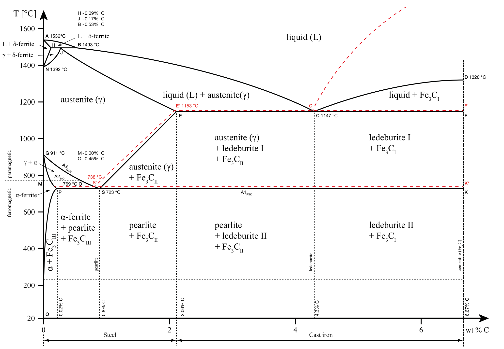
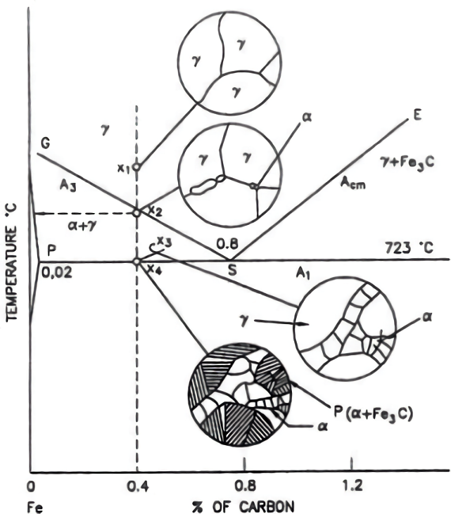
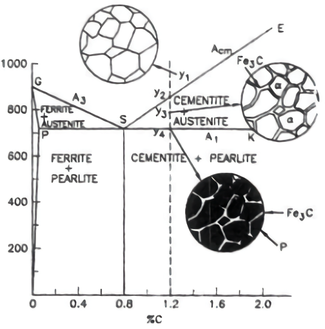

Primer 🔗
A study of the composition and structure of all steels and cast irons must begin with an examination of the iron-carbon phase (equilibrium) diagram. The term “iron-carbon” is, however, incorrect as this equilibrium diagram actually represents the metastable equilibrium between iron and cementite, instead of iron and carbon (graphite). So, strictly speaking, the true equilibrium should be between iron and graphite. Because graphite is practically non-existent in steels but cementite is, the metastable equilibrium between iron and cementite is considered because it accurately reflects the phases present in important (practical) iron-carbon alloys.
Since cementite is metastable, it will eventually decompose into iron and graphite, this process is known as graphitization. This decomposition, however, takes a very long time even at elevated temperatures. Moreover, with the help of alloying additions, graphitization can be retarded, e.g., with Si. So for practical purposes, cementite can be considered as an equilibrium (stable) phase.
It should be noted that, even with the presence of cementite, the iron-carbon phase diagram is an equilibrium diagram, which means that the phases encountered during solidification are equilibrium phases, which are the result of slow cooling/heating rates (i.e., sufficient time for carbon to diffuse in and out of iron lattice is available). Consequently, other metastable phases like martensite, bainite are not present in the iron-carbon phase diagram since they are the product of fast cooling i.e., a quench.
Before diving into the solidification of various alloys, let us go over a few important topics. Click here to skip the primer.
Phases in Iron-Carbon Phase Diagram 🔗
What is a phase?
A phase is a homogeneous, physically distinct, and mechanically separable substance or portion of matter. It is homogeneous in the sense that its two smallest parts are indistinguishable. Physically distinct and mechanically separable means that the phase will have a definite boundary surface.
Let us go over the formal definitions and characteristics of the various phases present in the iron-carbon diagram.
-
α-Ferrite
The interstitial solid solution of carbon in α-iron with crystal structure BCC (lattice constant of 2.86 Å) is called α-ferrite. Carbon has a maximum solubility of 0.025% at 727 °C and a minimum solubility of 0.0025% at room temperature.
-
Austenite
The interstitial solid solution of carbon in γ-iron with crystal structure FCC is called austenite. Carbon has a maximum solubility of 2% at 1147 °C and a minimum solubility of 0.77% at 727 °C. Unstable at room temperature, but can be made stable by adding alloying elements such as Ni, Mn, etc.
-
δ-Ferrite
The interstitial solid solution of carbon in δ-iron with crystal structure BCC (lattice constant of 2.89 Å) is called δ-ferrite. The maximum solubility of carbon is 0.1% at 1495 °C. In heat treating practice for plain carbon and low-alloy steels, δ-ferrite has no significance.
-
Cementite
The metastable Fe-C intermetallic compound $(\ce{Fe3C})$ with a fixed carbon wt. % of 6.67% is known as cementite. It has an orthorhombic crystal structure with the lattice constants a = 4.52 Å, b = 5.09 Å, and c = 6.74 Å. It is the hardest phase in the iron-carbon diagram and thus plays an important role in the hardening of many commercial steels.
Micro-constituents in Iron-Carbon Phase Diagram 🔗
A Micro-constituent is a mixture of phases that has a distinct identity in a microstructure.
What is a microstructure?
A microstructure is the appearance of a material’s structure under a microscope. A microstructure is made up of two parts: phase structure and grain structure. The phase structure is defined by the presence of various phases, their relative amounts, distribution, and alignment. The grain structure of the material shows the shape and size of the grains (crystals) which form the bulk material. It is characterized by grain boundaries, grain shape, and grain size.
Let us go over the formal definitions and characteristics of the various micro-constituent present in the iron-carbon diagram.
-
Pearlite
Pearlite is the product of austenite decomposition by a eutectoid reaction at 0.8% carbon and 723 °C. Pearlite of eutectoid composition contains 88.3% ferrite and 11.7% cementite. It is an intimate mixture of ferrite and cementite. It has a lamellar structure that consists of alternate plates of ferrite and cementite.
-
Ledeburite
Ledeburite is the product of eutectic reaction at 1147 °C and 4.33% carbon. Ledeburite of a eutectic composition contains 50.1% austenite and 49.9% cementite. It is an intimate mixture of austenite and cementite. It has a lamellar structure that consists of alternate plates of austenite and cementite. Austenite of ledeburite undergoes a eutectoid transformation into pearlite below 723 °C, and the resulting micro-constituent is known as transformed ledeburite.
Iron-Carbon Phase Diagram 🔗
Critical Temperatures 🔗
When an alloy is heated or cooled to “critical temperature”, certain phase transformations occur. The following symbols are used for the iron-carbon diagram.
| Critical Points | Transformation Temperature | Nature of Transformation | Line of Transformation |
|---|---|---|---|
| $\mathrm{Ac_{1}}$ | 723 °C | Transformation of pearlite into austenite | PSK |
| $\mathrm{Ar_{1}}$ | 723 °C | Transformation of austenite into pearlite | PSK |
| $\mathrm{Ac_{2}}$ | 768 °C | Transformation of α-iron into non-magnetic β-iron | - |
| $\mathrm{Ar_{2}}$ | 768 °C | Transformation of β-iron to ferro-magnetic α-iron | - |
| $\mathrm{Ac_{3}}$ | 723-910 °C | Transformation of ferrite into austenite | GS |
| $\mathrm{Ar_{3}}$ | 723-910 °C | Transformation of austenite into ferrite | GS |
| $\mathrm{Ac_{m}}$ | 723-1147 °C | Transformation of cementite into austenite | SE |
| $\mathrm{Ar_{m}}$ | 723-1147 °C | Transformation of austenite into cementite | SE |
| $\mathrm{Ac_{4}}$ | 1400-1492 °C | Transformation of austenite into δ-ferrite | IJ |
| $\mathrm{Ar_{4}}$ | 1400-1492 °C | Transformation of δ-ferrite into austenite | IJ |
The symbols correspond to the first letter of the French words meaning:
- A: arrêt (i.e. arrest).
- c: chauffage (i.e. heating).
- r: refroidissement (i.e. cooling).
When equilibrium conditions are observed (i.e., slow cooling/heating) the critical temperatures $\mathrm{Ac_1} = \mathrm{Ar_1} = \mathrm{A_1} = 723\;^\circ\text{C}$ are equal. However, due to thermal hysteresis, the critical temperature on heating $\mathrm{Ac_1}$ is always higher than the critical temperature on cooling $\mathrm{Ar_1}$ at ordinary rates of heating or cooling.
Invariant Reactions 🔗
The iron-carbon phase diagram contains three invariant reactions, which are associated with “0” degrees of freedom (according to Gibb’s phase rule), and thus at these points, phase transformation occurs at a fixed temperature.
-
Peritectic Reaction: Peritectic reaction occurs when liquid containing 0.55% carbon and δ-ferrite containing 0.09% carbon, transform on cooling into austenite with 0.18% carbon at 1492 °C.
\begin{gather} \ce{$\underset{\text{0.55}}{\text{L}}$ + $\underset{\text{0.09}}{\delta}$ <->[cooling][heating] $\underset{\text{0.18}}{\gamma}$} \end{gather}
-
Eutectic Reaction: Eutectic reaction occurs when liquid containing 4.33% carbon transform on cooling into austenite with 2% carbon and cementite with 6.67% carbon (i.e., ledeburite) at 1147 °C.
\begin{gather} \ce{$\underset{\text{4.33}}{\text{L}}$ <->[cooling][heating] $\underset{\text{2.0}}{\gamma}$ + $\underset{\text{6.67}}{\ce{Fe3C}}$} \end{gather}
Alloys containing 4.33% carbon are known as eutectic cast irons. Alloys containing less than 4.33% carbon are known as hypoeutectic cast irons while those with carbon % greater than 4.33% are known as hypereutectic cast irons.
-
Eutectoid Reaction: Eutectoid reaction occurs when austenite containing 0.8% carbon transforms on cooling into ferrite with 0.025% carbon and cementite with 6.67% carbon (i.e., pearlite) at 723 °C.
\begin{gather} \ce{$\underset{\text{0.8}}{\gamma}$ <->[cooling][heating] $\underset{\text{0.025}}{\alpha}$ + $\underset{\text{6.67}}{\ce{Fe3C}}$} \end{gather}
Alloys containing 0.8% carbon are known as eutectoid steels. Alloys containing less than 0.8% carbon are known as hypoeutectoid steels while those with carbon % greater than 0.8% are known as hypereutectoid steels.
Lever Rule 🔗
Using a relationship known as the lever rule, we can determine the relative amount of each phase that is present in the phase diagram in a two-phase region. For the lever rule to be applied on a two-phase region, a tie-line must be drawn, which is a horizontal line that joins the conjugate phases that coexist at a specific temperature.
Let us take an example of steel containing 0.8% carbon (i.e., eutectoid composition) at a temperature just below $\mathrm{A_1}$. Here, the conjugate phases will be ferrite and cementite, and the tie-line will be constructed by joining the points corresponding to 100% ferrite and 100% cementite at $\mathrm{A_1}$ i.e., 0.025% carbon and 6.67% carbon. Coincidentally, this tie-line corresponds to the eutectoid reaction line. Finally, to complete the lever, the fulcrum can be situated at the final alloy composition i.e., 0.8% carbon.
The calculation is as follows:
\begin{align} \text{ferrite} & = \frac{\text{Length of opposite arm (ZY)}}{\text{Total length (XY)}} \times 100 = \frac{6.67-0.8}{6.67-0.025} \times 100 = 88.3\\% \\\\ \text{cementite} & = \frac{\text{Length of opposite arm (XZ)}}{\text{Total length (XY)}} \times 100 = \frac{0.8-0.025}{6.67-0.025} \times 100 = 11.7\\% \end{align}
Solidification of Steels 🔗
Solidification of Hypoeutectoid Steels 🔗

Consider the solidification of an alloy of iron-carbon containing 0.4% carbon. At point $x_1$ the alloy consists of only austenite phase above GS ($\mathrm{A_3}$). The phase transformation begins when the alloy cools to point $x_2$, (when it intersects GS).
Since austenite is unstable below 723 °C ($\mathrm{A_1}$), it transforms into two phases which are stable below 723 °C, namely, ferrite and cementite. However, for this transformation to occur, austenite must have a eutectoid composition i.e., 0.8% carbon. To achieve such a composition, just below $x_2$, nucleation of proeutectoid ferrite begins at the austenite grain boundaries.
Proeutectoid ferrite is the ferrite that has formed before eutectoid temperature. “Pro-” meaning “before”.
Since the solubility of carbon in ferrite is very low, the formation/growth of proeutectoid ferrite proceeds with the rejection of carbon, this, in turn, enriches the austenite in carbon. This can be seen clearly on the iron-carbon diagram $\to$ the composition of austenite varies along GS (0.4% at $x_2$ and 0.8% i.e., the eutectoid composition, at $x_4$). Similarly, the composition of proeutectoid ferrite varies along GP.
As per the figure, upon cooling the alloy till $\mathrm{A_1}$, 51.6% ferrite must separate out from the alloy (which was initially composed of 100% austenite) so that the remaining austenite can achieve eutectoid composition. Note: The compositions are calculated using the lever rule and as an approximation, the lines of transformation (GS, GP) are considered to be straight.
Hence, as the alloy cools further, the proeutectoid ferrite grains grow, and the remaining austenite achieves eutectoid composition. Finally, at eutectoid temperature ($x_4$), austenite (of eutectoid composition), transforms into a lamellar mixture of ferrite and cementite i.e., pearlite, through a eutectoid reaction. Thus, just below the eutectoid temperature, the microstructure will consist of proeutectoid ferrite and pearlite, relative amounts of which can be calculated using the lever rule as shown above.
When the alloy is slowly cooled to room temperature, the proeutectoid ferrite begins to reject carbon because the solubility of carbon in ferrite decreases with temperature. The rejected carbon (with a carbon percent of 6.67%) will go on to form tertiary cementite. Therefore, the final microstructure of hypoeutectoid steel will consist of proeutectoid ferrite, pearlite, and tertiary cementite.
Solidification of Eutectoid Steels 🔗
Consider the solidification of an alloy of iron-carbon containing 0.8% carbon (i.e., eutectoid composition). It will remain austenite up to point S (i.e., eutectoid point). Crossing this point (or more correctly, $\mathrm{A_1}$), the alloy (composed of 100% austenite) transforms into pearlite through a eutectoid reaction. Regardless of the alloy, this transformation always takes place at a constant temperature (see figure).
Note: This holds true for all invariant reactions and in both directions i.e., cooling or heating.
Cooling the alloy further to room temperature has no effect on the microstructure; in other words, the final microstructure at room temperature consists solely of pearlite.
Solidification of Hypereutectoid Steels 🔗

Consider the cooling of an alloy of iron-carbon containing 1.2% carbon. At point $y_1$ i.e., above upper critical temperature $\mathrm{Ac_m}$, the alloy consists only of austenite. When the alloy is cooled to point $y_2$, i.e., when it crosses the $\mathrm{Ac_m}$, proeutectoid cementite nucleates along the grain boundaries of austenite.
Austenite in hypereutectoid steels is rich in carbon, therefore it rejects excess carbon (> 0.8%) as cementite, to achieve a eutectoid composition $\to$ phenomenon opposite to the solidification of hypoeutectoid steels.
As the alloy cools further, cementite grains grow and the remaining austenite achieves eutectoid composition (at 723 °C, point $y_4$). Austenite (of eutectoid composition) subsequently transforms into pearlite, through a eutectoid reaction. Cooling the alloy further to room temperature has no effect on the microstructure. The final microstructure at room temperature will consist of proeutectoid cementite and pearlite.
Solidification of Cast Irons 🔗
TBA.